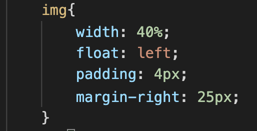

Margin
Устанавливает величину отступа от каждого края элемента. Отступом является пространство от границы текущего элемента до внутренней границы его родительского элемента.
Отступ от левого края элемента
Если у элемента нет родителя, отступом будет расстояние от края элемента до края окна браузера с учетом того, что у самого окна по умолчанию тоже установлены отступы. Чтобы от них избавиться, следует устанавливать значение margin для селектора <body> равное нулю.
Свойство margin позволяет задать величину отступа сразу для всех сторон элемента или определить ее только для указанных сторон.
Padding
Устанавливает значение полей вокруг содержимого элемента. Полем называется расстояние от внутреннего края рамки элемента до воображаемого прямоугольника, ограничивающего его содержимое.
Свойство padding позволяет задать величину поля сразу для всех сторон элемента или определить ее только для указанных сторон.